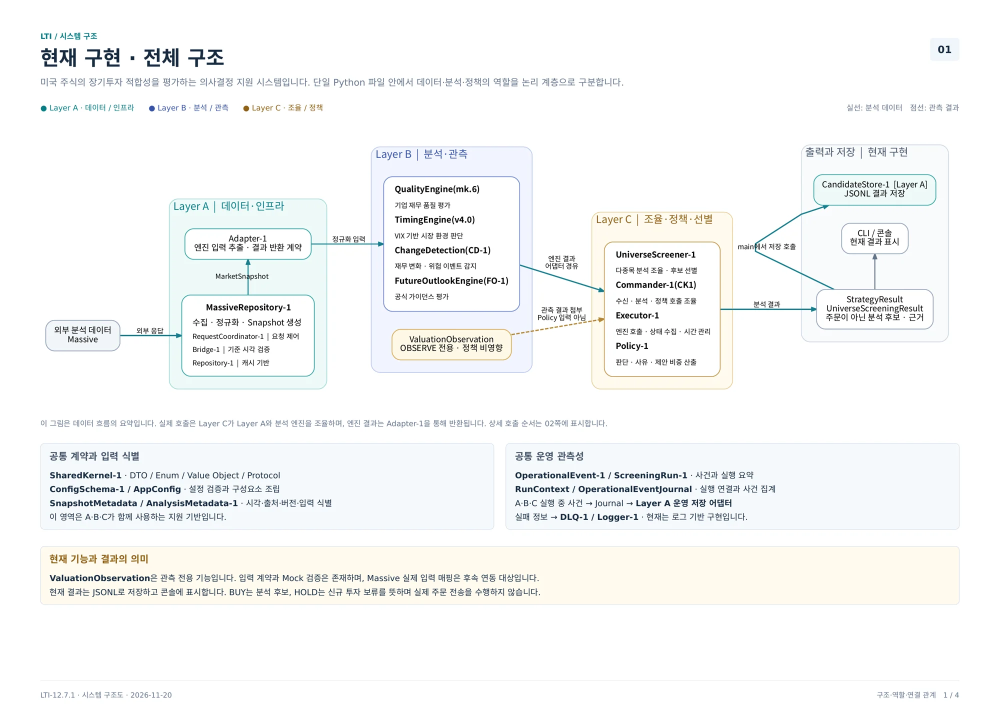
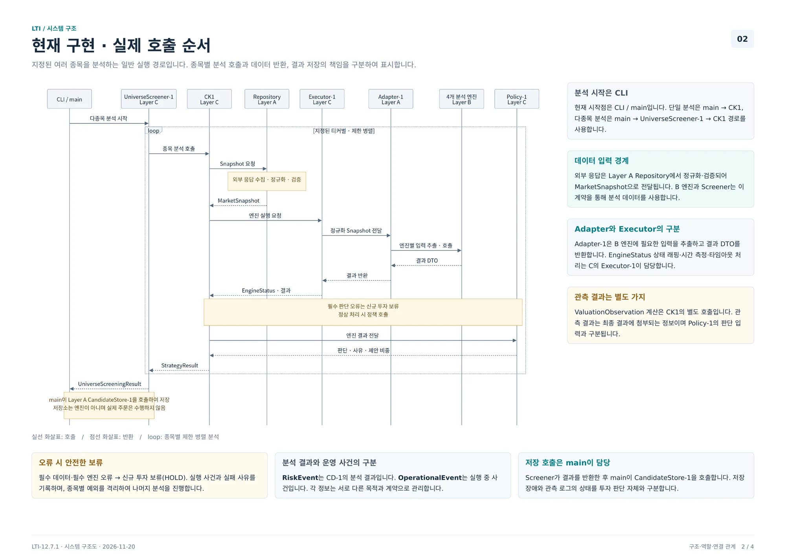
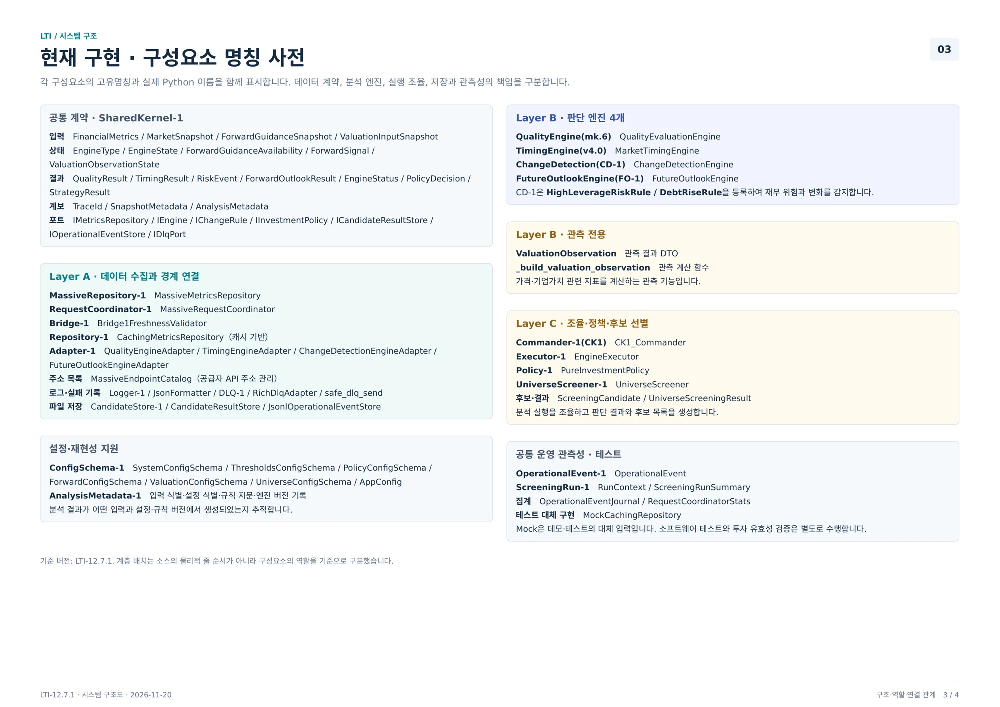
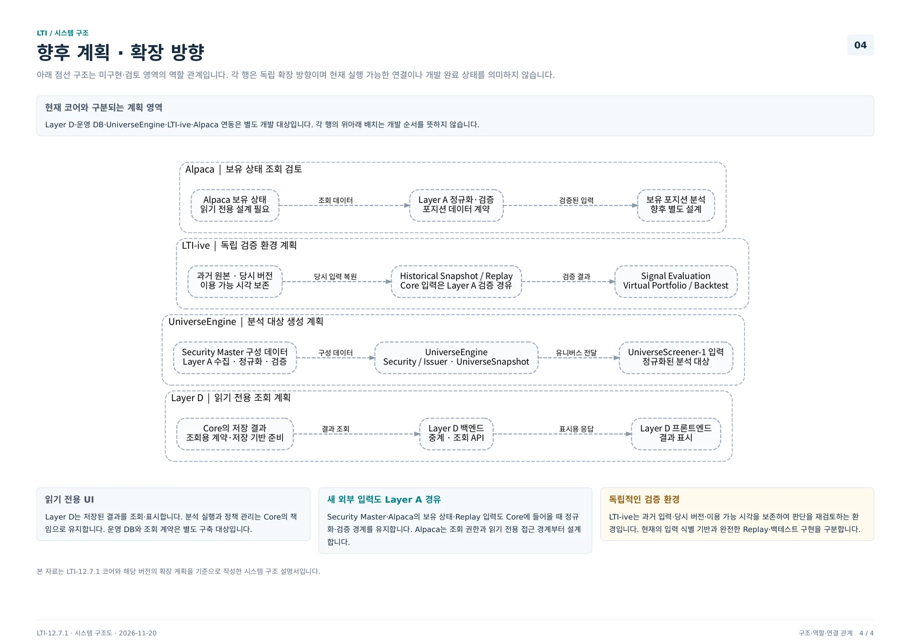

코드설계소 · 바이브 코딩 프로젝트 · 개발 진행 중
"이 기업은 오래 투자할 만한가?"를 데이터로 평가하는 의사결정 지원 시스템.
동아리 학생이 AI와 함께하는 바이브 코딩으로 설계부터 구현까지 진행 중인,
버전 12.7.1에 이른 장기 프로젝트입니다.
미국 주식의 장기투자 적합성을 평가합니다.
데이터를 수집·검증하고 기업과 시장 환경을 분석해, 투자 후보와 판단 근거를 제시합니다.
자동매매와 주문 전송은 하지 않습니다.
BUY는 "분석상의 후보"일 뿐 실제 주문이 아니며, 데이터나 엔진에 오류가 생기면 무조건 신규 투자 보류(HOLD)로 처리합니다.
AI와 대화하며 설계하고 구현하는 방식으로 개발합니다.
버전 번호 12.7.1이 말해주듯, 수십 번의 개선을 거치며 구조를 다듬어 왔습니다.
개발자가 직접 작성한 공식 설계 문서입니다.
하나의 Python 코어를 데이터(Layer A), 분석(Layer B),
조율·정책(Layer C)의 세 계층으로 나누고, 구성요소마다 고유 명칭과 버전을 붙여 관리합니다.




데이터 수집·검증(A), 분석 엔진(B), 조율·정책(C)의 책임을 분리했습니다.
재무 품질·시장 타이밍·변화 감지·가이던스 평가, 네 개의 분석 엔진이 각자의 일만 합니다.
필수 데이터나 엔진에 오류가 나면 HOLD(신규 투자 보류)로 안전하게 멈추고, 한 종목의 예외는 격리해 나머지 분석을 계속합니다.
"틀릴 수 있다"를 전제로 한 설계입니다.
모든 구성요소에 QualityEngine(mk.6), CD-1처럼 고유 명칭과 버전을 붙이고 Python 이름과 1:1로 대응시켜, AI와 협업해도 구조가 흔들리지 않게 했습니다.
투자 판단에 쓰는 정보와 참고용 관측 정보(ValuationObservation), 분석 결과와 프로그램 실행 기록까지 서로 다른 계약으로 분리해 관리합니다.